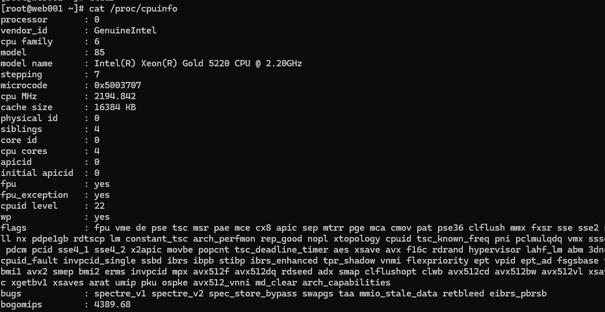
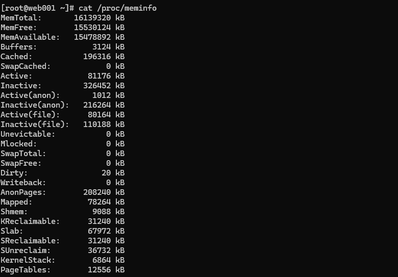
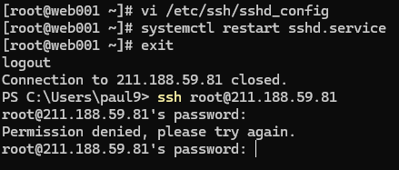
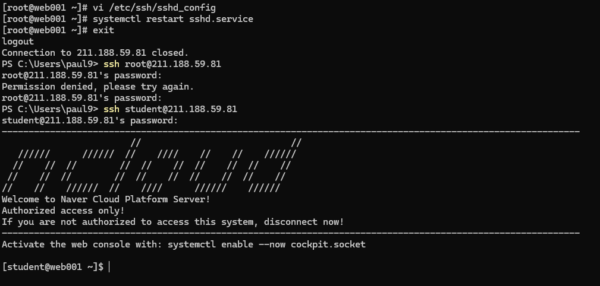
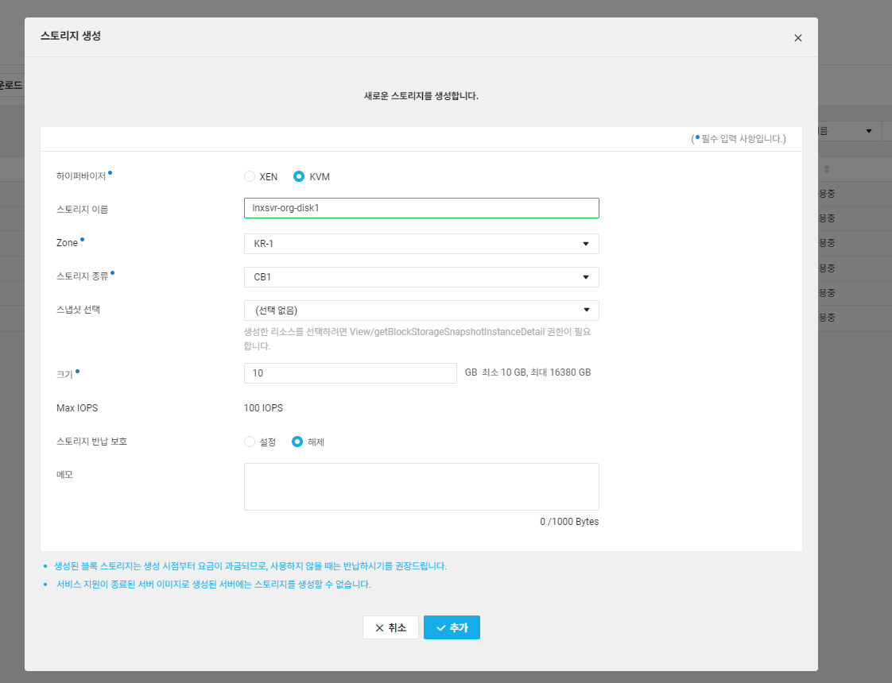
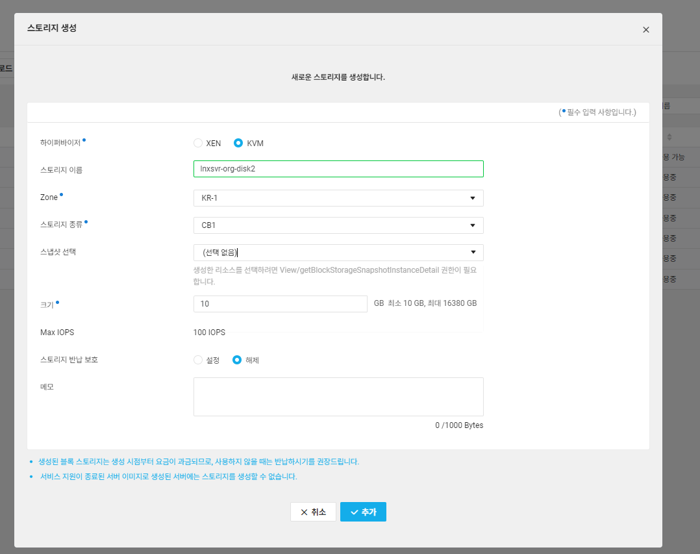
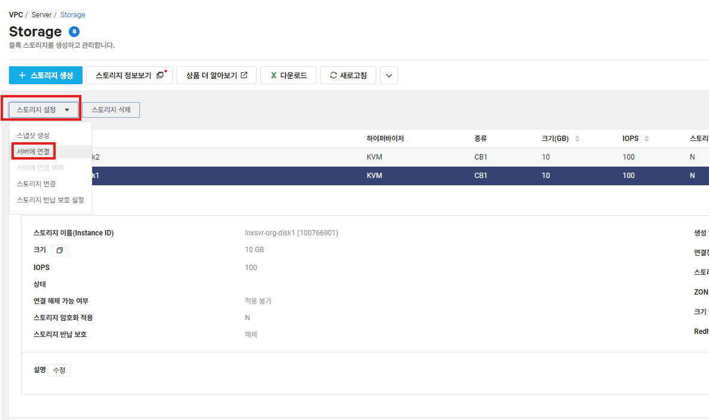
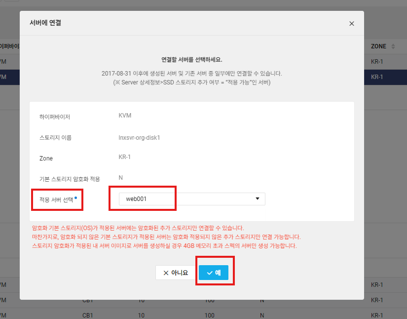
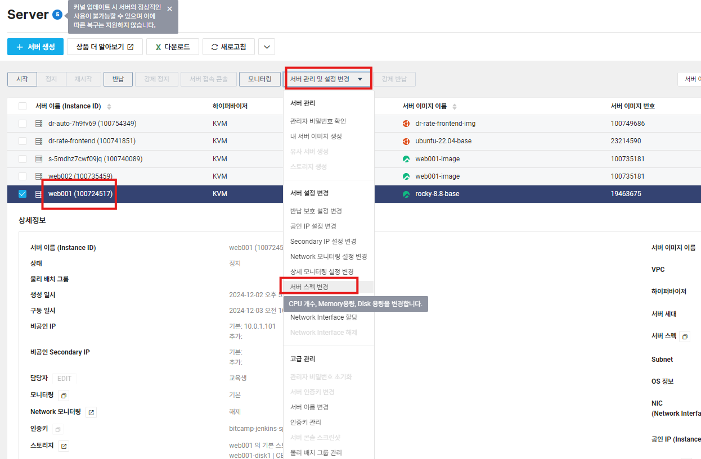

Lab 1
학습 목표
- (Demo) Root로의 원격 접속 제한 설정
- Cloud DB와 Web001 서버 연결 작업
Root 접속 차단하기
지금까지는 keypair 를 통해 Root 접속이 가능했다. 이제는 서버에 들어가서 계정을 따로 생성해주고, root 접속 차단을 진행할 예정이다.
- 우선 서버 접속을 진행 (Root 접속)

- 계정 생성

- root 접속 차단 진행
- 우선 다음 명령어를 통해 SSH 환경설정 파일 접근
vi /etc/ssh/sshd_config - 이후 RootSSH 접속제한
- 우선 다음 명령어를 통해 SSH 환경설정 파일 접근
systemctl restart sshd.service명령어로 sshd 서비스 재시작systemctl restart sshd.service- 이후 root계정으로는 서버에 접근할 수 없음을 확인할 수 있다.

- 이제는 만든 계정인 Student로 가보도록 하자

- 잘 되죵?
Cloud DB와 Web001 연결 작업
서버 실습을 위해 서버에 다음과 같은 설정 내용을 반영해야 한다.
- 변경 파일
/var/www/html/dbconnect.php /var/www/html/key.php
- 변경하기 이전에 student는 자격이 너무 없기 때문에
su - root명령어를 통해 root에서 실행하도록 하자su - root
- 먼저
/var/www/html/dbconnect.php부터 진행해보자vi /var/www/html/dbconnect.php- 다음 내용을 추가해준다.
<?php $servername="db-302mqn.vpc-cdb.ntruss.com"; $username="ncpuser"; $password="ncp!@#12345"; $dbname="application"; //Createconnection $conn=newmysqli($servername,$username,$password,$dbname); //Checkconnection if ($conn->connect_error){ die("Connectionfailed:".$conn->connect_error); } ?> - servername은 mySQL은 private 도메인을 넣어준다.
- 다음 내용을 추가해준다.
- 이후
/var/www/html/key.php를 편집해준다.- 이때 마이페이지>인증키 관리에서 AccessKeyID와 SecretKey를 확인하여 입력을 진행한다.
- 이때 마이페이지>인증키 관리에서 AccessKeyID와 SecretKey를 확인하여 입력을 진행한다.
- 추가로 다음 명령어를 통해 패키지를 설치한다
# 필요한 패키지 설치 dnf install -y redis mariadb-server php-mysqlnd # 서비스 활성화 및 시작 systemctl enable redis systemctl enable mariadb systemctl start redis systemctl start mariadb # Apache와 PHP-FPM 서비스 재시작 systemctl restart httpd systemctl restart php-fpm # MySQL 초기화 스크립트 실행 mysql < /var/www/html/dbstep1.sql mysql < /var/www/html/dbstep2.sql
Lab2
학습 목표
- Container Registry 서비스 생성
- Custom image 생성 후, Container Registry에 Push
Storage 생성
- lnxsvr-org-disk1

- lnxsvr-org-disk2

- 생성이 완료되면 상단의 “스토리지 설정” > “서버에 연결” 선택


Storage 마운트
web001 서버에 접속하여 다음과 같이 작업은 진행한다.
- 마운트하기 위한 폴더�� 생성
mkdir /disk1 mkdir /lvm - 생성하여 Attach한 디스크의 파티션 생성을 진행
fdisk /dev/vdb - 생성한 /dev/vdb1 파티션에 대해 포맷을 진행
mkfs.ext4 /dev/vdb1 - 마운트하기 위한 디렉터리 생성 작업 후 /dev/vdb1 파티션 마운트 및 데이터를 생성
mount /dev/vdb1 /disk1 cp -rf /etc/* /disk1/ - lnxsvr-org-disk1, lnxsvr-org-disk2 디스크는 LVM 구성하여 마운트
fdisk /dev/vdc - 이후 /dev/ vdd도 동일한 작업 수행
fdisk /dev/vdd - Pvcreate로 물리적인 볼륨을 생성
pvcreate /dev/vdc1 pvcreate /dev/vdd1 - 볼륨 그룹 생성
vgcreate lvmVG /dev/vdc1 /dev/vdd1 vgdisplay - 논리적인 볼륨 생성 및 포맷
lvcreate --extents 100%FREE -n lvmLV lvmVG mkfs.ext4 /dev/lvmVG/lvmLV - 마운트 및 파일 시스템 확인
mount /dev/lvmVG/lvmLV /lvm df
스토리지 용량 증설
사전에 구성한 /disk1 파티션의 공간을 기존 10GB에서 20GB로 증설하고자 한다.
- Umount를 통한 마운트 해제(umount가 안되는 경우엔 서버를 리부팅한다)
umount /dev/vdb1 - growpart 설치
yum install -y cloud-utils-growpart - Lsblk로 파티션 정보 확인
lsblk - 디스크 용량 증설
- Services>Compute>Server>Storage 선택
- Web001-disk1 스토리지를 선택 후 상단의 스토리지 설정 >서버에서 연결 해제 선택
- 디스크 선택 후 상단의 스토리지 설정 > 스토리지 변경 선택
- 디스크 크기를 20GB로 변경 후 하단의 확인 버튼 클릭
- 용량 변경 후 사용 가능 상태로 바뀌면, 상단의 스토리지 설정 >서버에 연결을 선택하여 기존서버 (web001) 선택 후 하단의 ‘예’ 버튼 클릭
- 이미 연결돼 있는 거 아닌가..
- 변경된 내용 확인 (만약 lsblk 명령어로 디스크 정보가 보여지지 않을 경우에는 서버 재부팅)
lsblk growpart /dev/vdb 1 lsblk - 파티션 공간 확장
e2fsck -f /dev/vdb1 resize2fs /dev/vdb1 - Mount를 하여 데이터와 공간 확인
- mount /dev/vdb1 /disk1
서버 스펙 변경 및 확인
- 서버 탭에서 web001 서버 선택
- 상단의 서버 “정지” 선택
- 서버가 셧다운 되면 서버 관리 및 설정 변경에서 “서버 스펙 변경” 선택

- 아무거나 선택 후 “예” 선택
- 상단의 서버 “시작” 버튼 선택
- 서버 접속 후 다음 명령으로 CPU와 메모리 정보 확인
cat /proc/cpuinfo cat /proc/meminfo